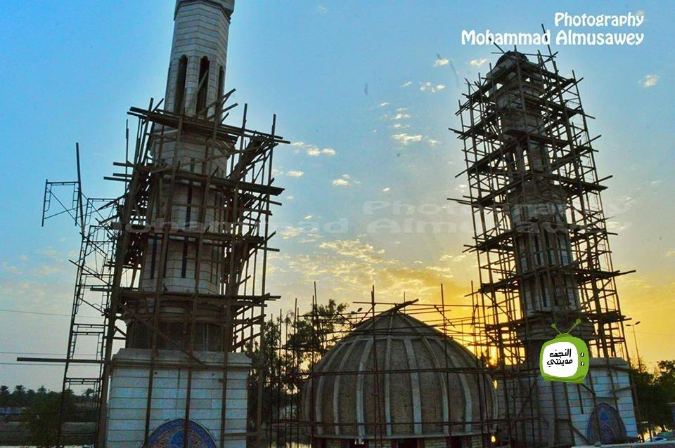
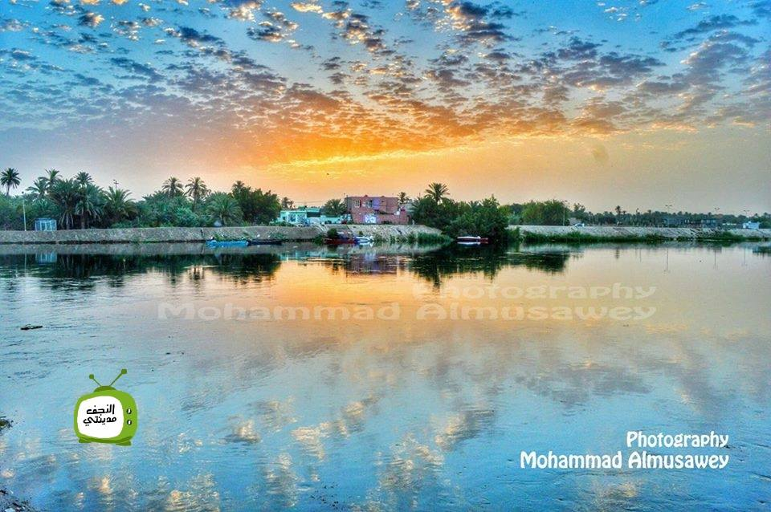
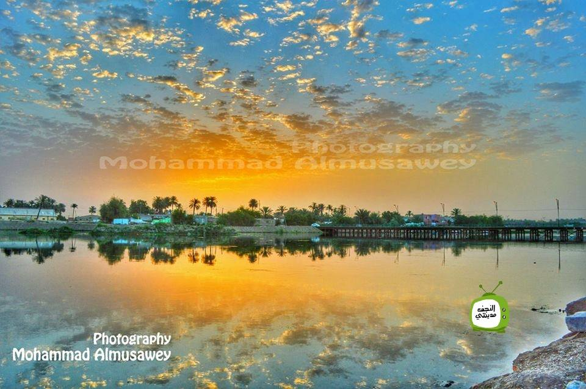
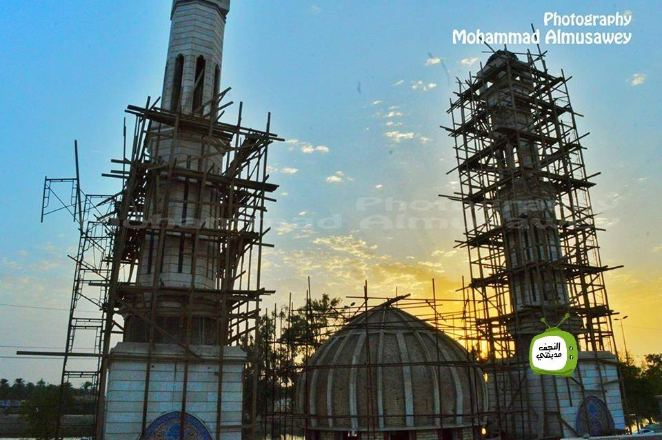
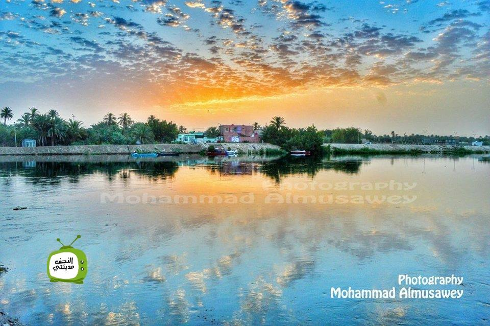
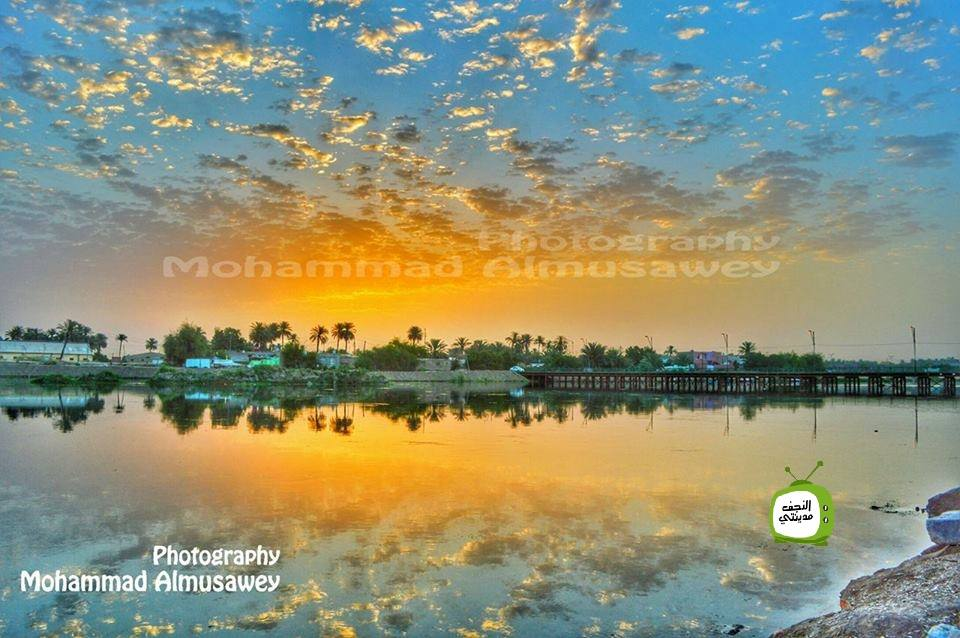

الى الشارع الموازي لنهر الفرات وعلى ضفاف مدينة الكوفة يقع مقام النبي يونس عليه السلام، إذ ألقاه الحوت الذي كان يبتلعه عليه السلام في هذا المكان، وقد بني هذا المقام في زمن خلافة أمير المؤمنين علي عليه السلام إلى جوار جامع الحمراء الذي كان في عهده مقراً لبيت مال المسلمين، وقد هُدم الموقع بالكامل قبل سنين أملاً بتطويره وتوسيعه.
 




